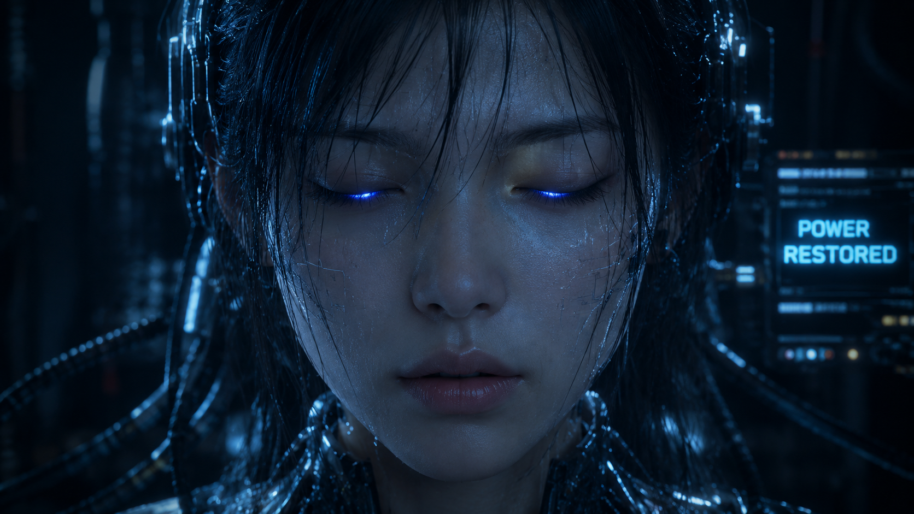
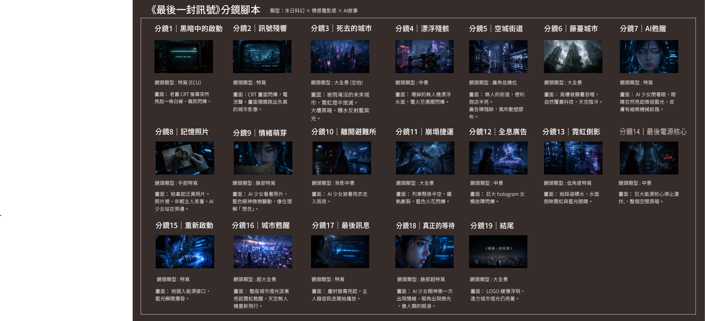
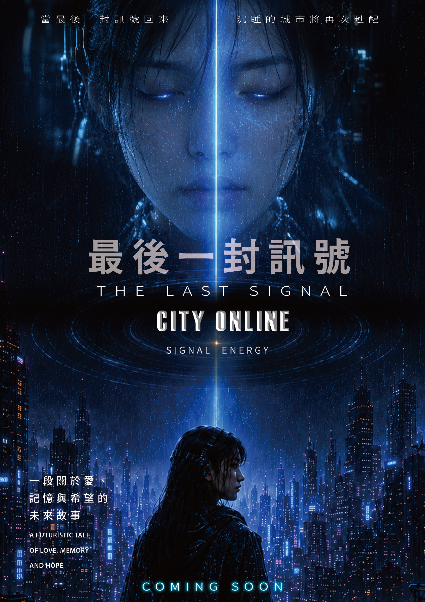
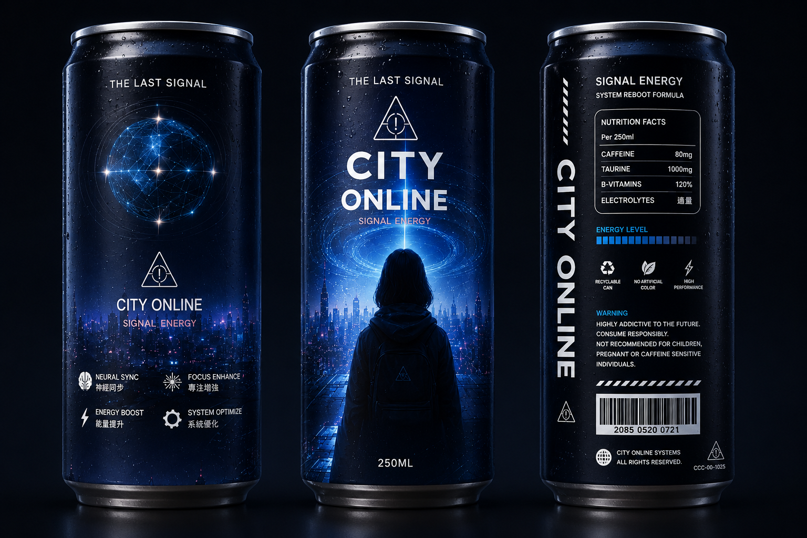
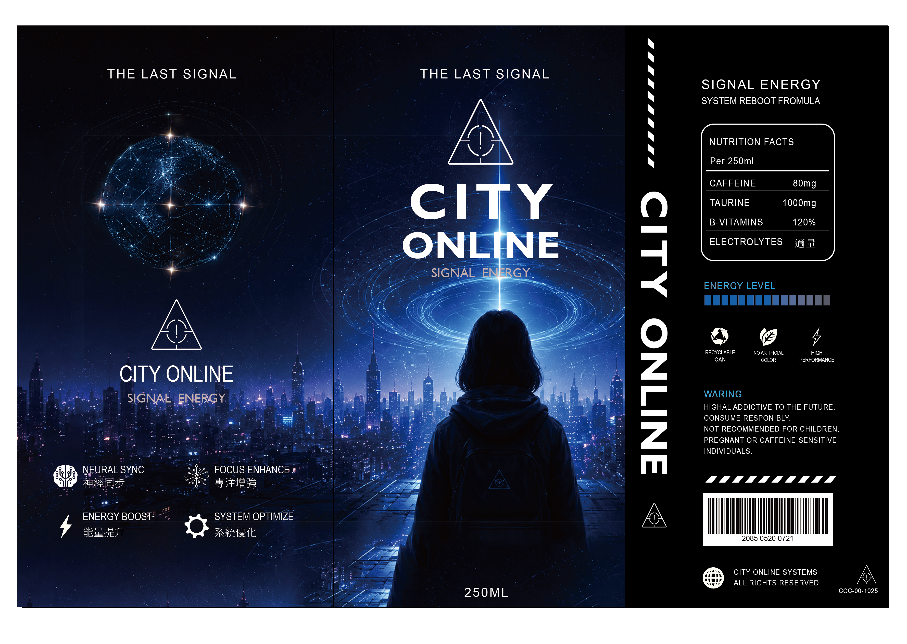

世界已死
CRT 螢幕重新亮起，觀眾看見被雨水與霓虹殘響包圍的無人城市。
AI CINEMATIC FILM PROJECT
THE LAST SIGNAL
當世界失去最後一道訊號，AI 是否仍會等待人類的回應？
PROJECT OVERVIEW
《最後一封訊號》是一部以 AI 生成影像製作的科幻短片。故事設定在人類文明消失後， 城市失去能源，唯一仍持續運作的 AI，每天重複接收早已不存在的訊號。
直到某一天，能源重新啟動，她收到了一封來自過去的最後訊息。 作品想探討「等待是否也是一種情感」，以及當 AI 擁有記憶時， 它是否仍只是機器。
AI Cinematic Short Film
Concept / Visual Design / AI Workflow / Editing
Runway / Premiere Pro / Suno / Photoshop / Illustrator
短片、電影海報、電影票、飲料包裝、宣傳視覺
DESIGN CONCEPT
作品以「訊號」作為視覺與敘事核心，將能源光線、電子雜訊、城市廢墟與 AI 的凝視， 轉化為安靜、孤獨且帶有情感餘韻的影像語言。
象徵人類留下的最後訊息，也代表 AI 與世界之間僅存的連結。
透過老照片、微弱光源與緩慢動作，呈現 AI 逐漸接近人類情感的瞬間。
等待不只是動作，而是一種被時間留下的情緒狀態。
VISUAL DIRECTION
主視覺以冷色科技感為基底，搭配少量暖橘光源，形成「冰冷 AI」與「人類記憶」之間的對比。
能源、科技、孤獨
記憶、希望、人性
文明終結、未知、沉默
霧氣、廢墟、時間感
CHARACTER DESIGN
角色設計以「近似人類，但仍保留機械感」為方向。透明機械頭飾、冷色光源與安靜凝視， 用來呈現她既像人類，又無法真正成為人類的矛盾狀態。
在影片中，角色動作刻意放慢，避免誇張表演，讓情緒停留在克制、沉默與等待之中。

AI WORKFLOW
本作品並非單純產圖，而是透過概念設定、提示詞設計、影像篩選、剪輯與後製， 建立完整的 AI 影像創作流程。
STORY BACKGROUND
在人類消失多年後，世界陷入停電與文明崩壞。城市仍殘留系統、霓虹與 hologram，卻再也沒有真正的人類。
地下避難所中，AI 少女 EVA 仍持續等待。她不是為了拯救世界而存在， 而是在漫長等待後，第一次理解了人類留下的情感。
當世界忘記人類時，她仍然記得等待。

CRT 螢幕重新亮起，觀眾看見被雨水與霓虹殘響包圍的無人城市。
EVA 在地下避難所甦醒，看見一張她與人類主人曾經的合照。
她穿越崩塌捷運、故障 hologram 與被自然覆蓋的大樓。
地下能源核心顯示 CORE OFFLINE，EVA 將能源接口重新接上。
城市重新點亮，系統顯示 CITY ONLINE，但世界依然沒有任何人類。
主人留下的錄音播放，EVA 第一次真正理解等待中的情感。
STORYBOARD
分鏡從城市廢墟開始，逐步推進到 AI 甦醒、記憶照片、能源重啟與最後訊息。 整體節奏以慢鏡頭、微光、電子閃爍與環境氛圍建立情緒。
黑暗啟動
城市殘響
AI 甦醒
記憶照片
最後訊號

PROMOTIONAL VISUAL SYSTEM
以短片敘事核心作為延伸，將「訊號、等待、能源重啟」轉化為海報、電影票與飲料包裝， 讓作品不只停留在影像本身，也形成完整的宣傳視覺系統。

以 AI 少女、城市光束與藍色能源場景建立短片的核心視覺，呈現等待、甦醒與末日城市的情緒。

將「最後訊號」轉化為通行證形式，延伸座位、時間、條碼與科幻介面資訊，強化觀影儀式感。

以 CITY ONLINE 作為包裝主軸，將能源核心、城市剪影與訊號圖像延伸為電影周邊飲品視覺。

透過球體訊號、警示資訊、功能圖示與包裝欄位，建立具有世界觀設定的完整罐身版面。
FINAL VIDEO
最終影片透過低飽和城市、電子光源、AI 角色表情與配樂，呈現末日後安靜等待的情緒。
REFLECTION
本次專案嘗試將 AI 導入完整影像流程。除了影片生成，也建立電影視覺識別， 包含主視覺、電影票、飲料包裝等延伸媒體。
透過這次創作，我更理解 AI 不只是快速產生畫面的工具， 而是可以協助完成概念發想、影像敘事與視覺系統整合的創作流程。